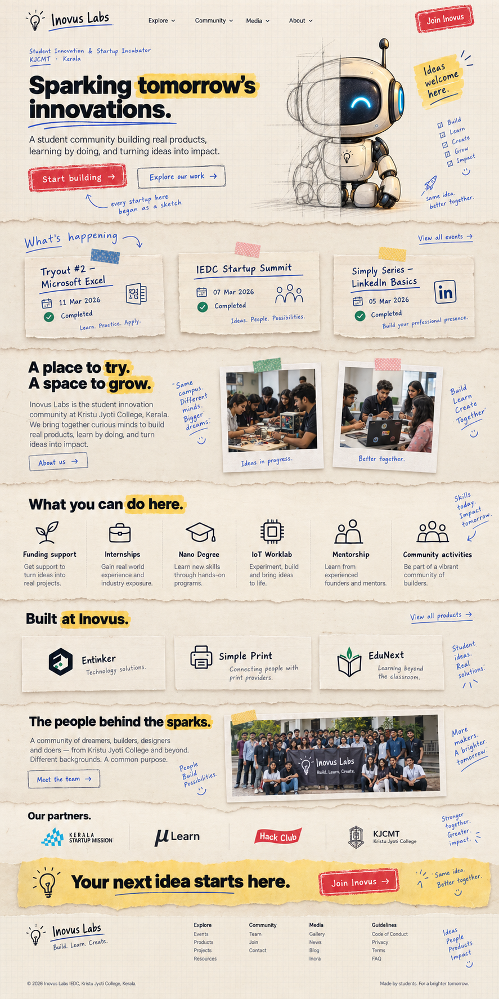
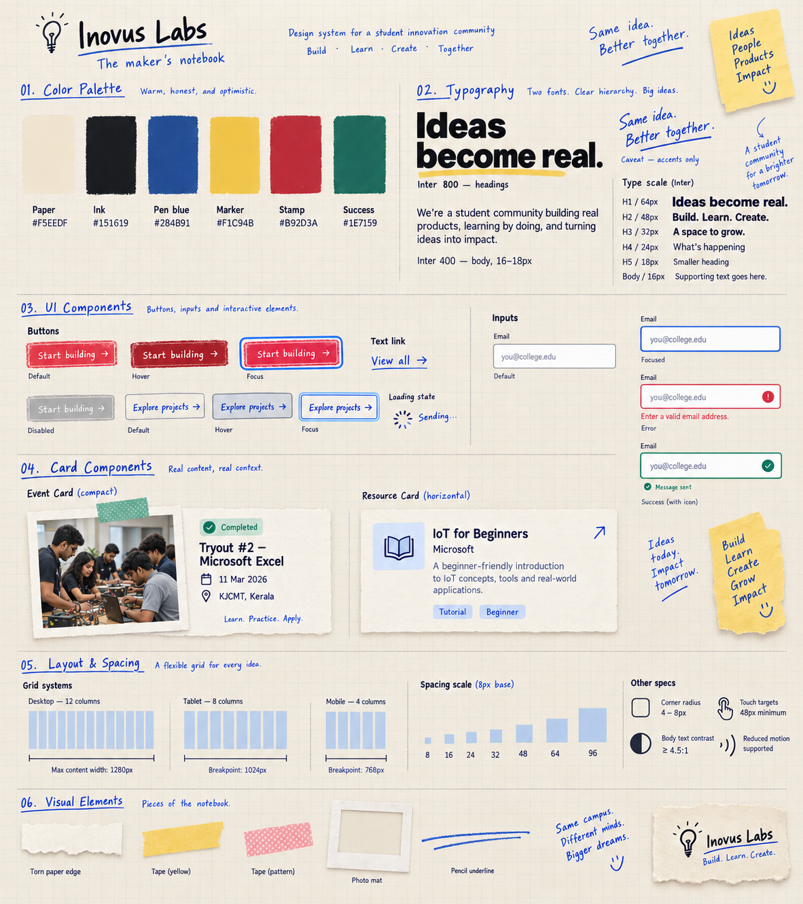
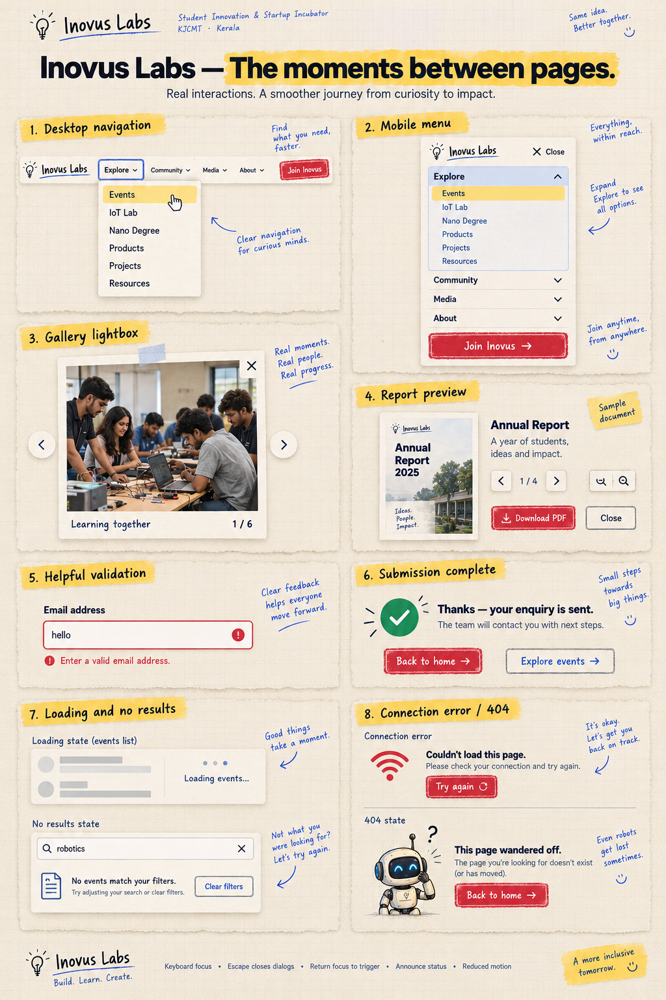

Desktop pages


Mobile journeys


Shared system & interaction states



27↓
Interaction states
Menus, lightbox, document preview, validation, success, loading, empty and error states.
Shared visual specification27 visual references · 22 desktop pages and templates · 3 mobile layouts · 2 system sheets
Open any image for the full page. Scroll within previews to see lower sections. These are AI-generated design references, not a deployed website.
A · Reference logic. The notebook expresses ideas becoming real: graph paper provides structure, oversized black headings establish hierarchy, yellow marks emphasis, red identifies primary actions, blue adds a human voice, and photographs show collaboration. Keep decorative textures away from essential controls.
B · Source review. Navigation exposed 19 main-site routes. Home, About and Resources yielded readable content; several inner routes returned blank content in this session. Therefore this is a partial live-site review, not a complete functional or accessibility audit. The redesign covers every discovered route and clearly distinguishes additional templates.
C · Direction. One coherent maker-notebook system; Inter for content and controls, Caveat for short accents; cream, black, blue, yellow and red; 8px spacing. See the visual system sheet for the specification.
D · Page plan. Each image below names the destination and its purpose. Event and article details are reusable templates; Join is a proposed new enquiry destination. No verified need was found for pricing, authentication or dashboards. External services retain their own interfaces.
E · Visual references. All photography and most illustrations were generated for design exploration. Named team members use initials. Unverified article, podcast, archive and project content is illustrative. Use official portraits, logos, documents and production content when implementing.
F · Build guidance. Share navigation, footer, buttons, form fields, status badges, cards, document rows and dialogs. Use single columns below 768px, 2-column layouts at tablet widths, and 12-column desktop grids from 1024px. Keep controls at least 48px high. Respect reduced motion, support keyboard operation and announce form status. Validate contrast and responsive layouts in real code; raster references do not prove accessibility compliance.
Some generated footer links (Privacy, Terms and FAQ), icons, text sizes and component spacing are conceptual variations. Implement only real approved destinations and normalize against the final design-system tokens. Do not treat any illustration or badge as live data.


Menus, lightbox, document preview, validation, success, loading, empty and error states.
Shared visual specification